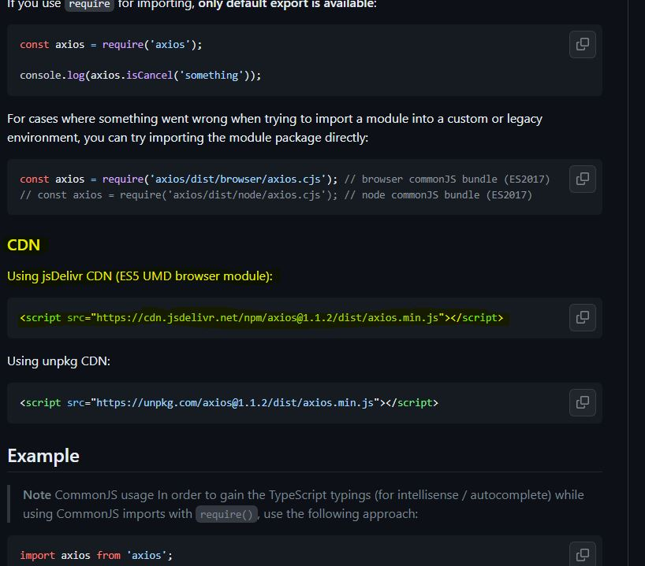
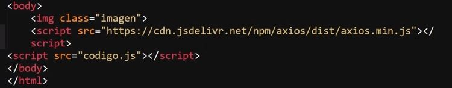
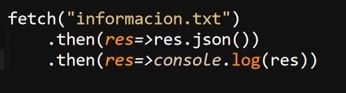
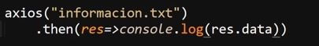
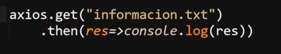
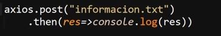
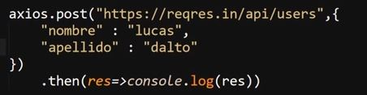
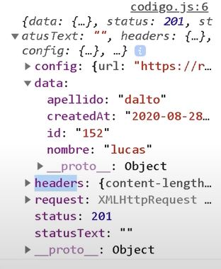
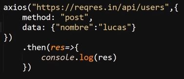

Librería Axios
Esta sección se trata del único elemento no nativo que se verá en el curso, se trata de la forma más moderna de trabajar con las peticiones de una página web, de hecho la implementación de esta biblioteca se recomienda para aquellas ocasiones en las que el proyecto va a realizar un gran número de peticiones al servidor o necesita de cargar elementos de un gran peso, ya que en términos de código esta se encuentra extremadamente optimizada y mejora el desempeño de "fetch", mientras en términos funcionales no hace una gran diferencia en latencia o tiempos de carga pero al estar mejor adecuada para muchas peticiones si puede llegar a hacer una diferencia, por su lado el uso de "fetch" se recomienda en el caso de que se requiera usar las peticiones de una forma mucho más puntual o ocasional en el proyecto.
Instalación
Ya que se trata de una biblioteca JavaScript es necesario realizar una instalación en el proyecto, para esto es necesario acceder directamente a los archivos del repositorio de GitHub, ya sea desde el link aquí expresado o buscando en Google "GitHub axios axios", de ese modo se puede acceder al repositorio, una vez dentro de este se desciende por el repositorio hasta llegar a la sección de instalación, en la que desglosa todos los métodos disponibles.
El método empleado para este ejemplo es el "Using jsDelivr CDN (ES5 UMD browser module)" el cual brinda el código HTML para llamar los archivos directamente desde su servidor, por lo tanto lo único que hay que hacer es copiar el código en cuestión e insertarlo dentro del documento HTML.

Un aspecto importante es que el llamado a la librería debe de ubicarse antes que el llamado al archivo JS del proyecto, esto debido a que el navegador debe acceder a la librería para poder emplear las funciones de esta y utilizarlas en el documento JS del proyecto, si se accede a la librería después de ejecutar el documento JS del proyecto, es decir si se llama primero al documento que a la librería, se generarían errores al tratar de usar las funciones.
Ejemplo

Nota: Las recomendaciones de Google para los llamados de JS indican que, lo absolutamente indispensable como los llamados a "Google Analytics" se ubican en el "head" del documento, por otro lado los llamados comunes se ubiquen al final del documento HTML y solo si se trata de un código inferior a 6 líneas se puede escribir en el head usando la etiqueta "script".
Uso
El uso de "axios" es muy similar al de "fetch", de hecho la principal diferencia entre ambos radica en que "axios" no retorna los datos encapsulados, por lo tanto no es necesario el realizar algún tipo de conversión en estos.
Ejemplo de Fetch

Ejemplo de Axios

En este ejemplo se puede observar el cómo el uso de "axios" simplifica aún más el código de la petición GET, esto debido a que como los datos no vienen encapsulados no es necesario realizar una conversión, por lo tanto se reduce el código a solo dos líneas.
Por su parte "axios" al igual que "fetch" permite el realizar una petición GET por defecto, es decir si no se especifica el método se usará el método GET, una de las ventajas de "axios" radica en que por sí mismo este configura la petición, incluyendo los headers de esta, por lo que no es necesario definir nada de eso, para definir el método de la petición es suficiente con utilizar la función acorde:
GET

POST

Por su parte para el envío de los datos por las peticiones POST simplemente hay que añadir los datos a enviar como un segundo parámetro en el método .post, mientras que al utilizar el método GET al añadir los datos como segundo parámetro estos no serán tomados como datos, sino como configuraciones de la petición, por lo que estos datos no se enviarán.
Ejemplo

Resultado

Nota: Con "axios" no es necesario serializar los datos, esto ya que este se encuentra preparado para trabajar con objetos JSON.
Existe una segunda forma de trabajar con el método POST, la cual es no utilizar el método ".post" ya establecido por "axios", sino en su lugar establecer el método y sus datos como configuraciones de la petición:

Ambas formas de trabajar las peticiones POST resultan en el mismo resultado, sin embargo el método ".post" posee la ventaja de brindar un código más reducido.